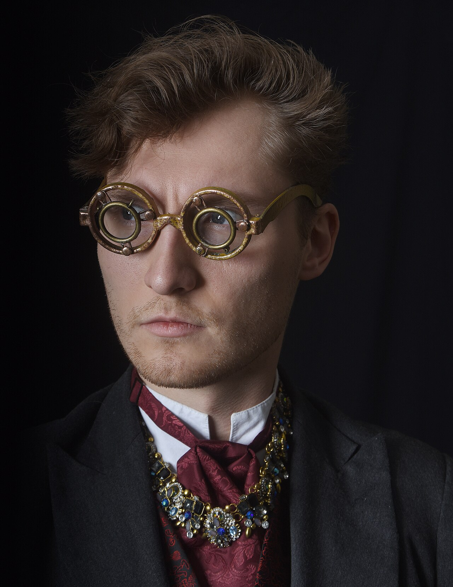
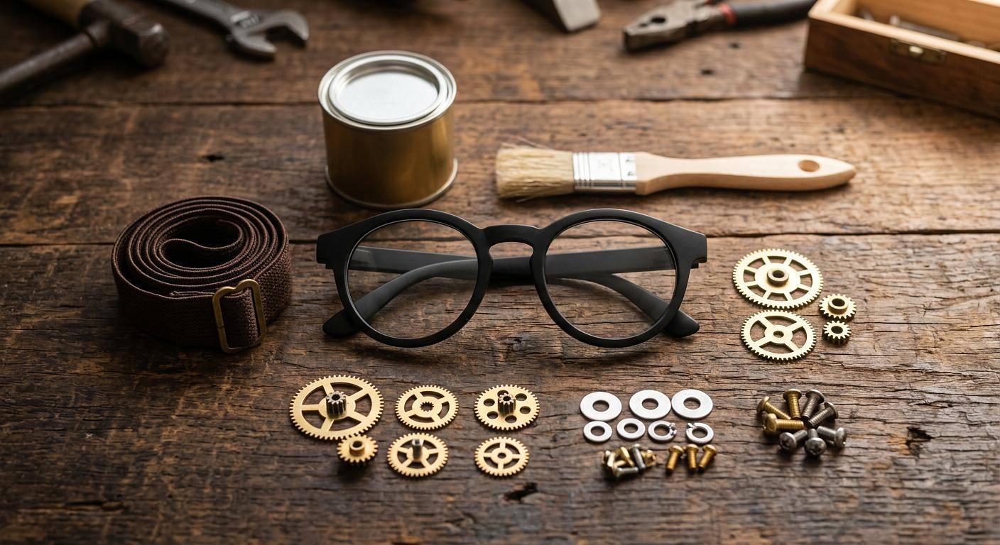

DIY vs. Buy: Steampunk Goggles Compared (2026)
Updated 2026-11-15
Should you build your steampunk goggles or buy them? Both paths work — but they suit different makers, budgets and timelines. Here is an honest comparison based on our own builds and the gear we sell, so you can pick the right route in two minutes.
Quick answer: Build DIY steampunk goggles if the build is part of the fun — $5–15 in parts and 30–90 minutes gets you a one-of-a-kind pair. Buy ready-made if you have a deadline: $30–40 ships finished and riveted in days. In our October 2026 workshop test, the DIY can-lid build cost about $7 and took 1 hour 50 minutes including drying time, while the ready-made pair needed zero work but cost roughly four times as much. Most makers end up with one of each.
The DIY Route: Build Them in an Afternoon

Our DIY steampunk goggles guide walks you through two build methods — a thrift-store version and a welded look — in about 30 minutes of hands-on time. The material cost sits between $5 and $15 if you salvage straps, lids and lenses from dollar-store and second-hand finds.
In one line: thrift or salvage your base, glue in clear lenses, add a strap and paint bronze — 30–90 minutes for $5–15 in parts.
- Cost: $5–15 in parts you mostly already own
- Time: 30–90 minutes
- Skill: beginner-friendly (scissors, hot glue, paint)
- Result: a one-of-a-kind pair that matches your costume exactly
The Buy Route: Ready-Made Brass

Buying makes sense when you need the goggles for a specific date — a convention, a photoshoot, a themed wedding — and cannot afford a redo. Ready-made pairs ship finished, riveted and wearable out of the box, and models like the Top Hat with Removable Goggles bundle the hat and eyewear into one coordinated piece.
In one line: order a finished, riveted pair — wearable out of the box, budget $30–40 plus a few shipping days.

Complete this look: Airship Captain · Victorian Inventor · Mechanical Explorer
DIY vs. Buy: The Honest Comparison
| DIY build | Ready-made | |
|---|---|---|
| Cost | $5–15 | $30–40 |
| Time | 30–90 min + drying | Ships in days |
| Durability | Good if glued well | Very good |
| Uniqueness | One of a kind | Small-batch designs |
| Best for | Cosplayers on a budget, weekend projects | Deadlines, gifts, daily wear |
How We Tested Both Routes (Steamgears Workshop, October 2026)
What we used:
- DIY route: 2 aluminium can lids ($0), a strap cut from an old belt ($0), report-cover lenses (~$1), bronze acrylic paint (~$2), hot glue — about $7 total, 1 h 50 m including drying time
- Buy route: ready-made aviator goggles, amber lenses, riveted leather strap — $24.95, worn through a full test day
Both routes were run side by side on the same day, so the comparison is like-for-like.
We ran both routes side by side in the Steamgears workshop in Aabenraa during October 2026. The DIY route was the can-lid build from our goggles guide: two aluminium can lids, a strap cut from an old belt, report-cover lenses and bronze acrylic paint — $7 in parts and 1 hour 50 minutes including drying time. The buy route was a ready-made pair with amber lenses and a riveted leather strap ($24.95), worn through a full test day.
What we learned: the DIY pair needed two glue fixes on the strap joints after its first wearing — hot glue holds rims fine, but not load-bearing strap points — and the painted finish scuffed where it rubbed the hat brim. The bought pair needed no breaking in, survived the same test day untouched, and cost about what four DIY builds would. Verdict from the bench: build one to learn the craft, buy the pair you will actually wear to events.
Our Verdict
DIY if the build itself is part of the fun — the goggles become a story you can tell. Buy if the costume deadline is close or you want gear that survives convention floors. Most of our readers end up doing both: a thrift-built practice pair, then one bought pair for the finished look.
In one line: DIY for the story, buy for the deadline — and a thrift-built practice pair plus one bought pair covers both.
FAQ
Are DIY goggles comfortable? Yes, if you pad the nose bridge and use a soft strap. Our guide covers both.
Can I wear bought goggles all day? Ready-made pairs with padded rims are designed for full convention days; check the product photos for padding details.
Which is cheaper overall? DIY wins on a single pair; buying wins once you count failed first attempts and glue burns — time is a cost too.
Can I build DIY goggles without power tools? Yes. The can-lid and cardboard methods need only scissors, a can opener, sandpaper and hot glue — no drilling or cutting tools beyond that.
What do ready-made steampunk goggles cost? In the Steamgears shop, aviator and driver styles run $24.95–29.95, and hat-and-goggles bundles start at $39.95.
Which route is better for a first convention? If the event is less than a week away, buy — shipping beats a rushed build. With two or more weekends of lead time, the DIY build is cheap enough to try first.
Want the full build instructions first? Read DIY Steampunk Goggles: Build Your Own in 30 Minutes, or see how goggles fit into a complete outfit in our step-by-step costume guide.
Tested and photographed in the Steamgears workshop, Aabenraa — October 2026.
About the workshop behind this guide. This comparison is based on builds made and photographed at the Steamgears workshop in Aabenraa, Denmark. Steamgears publishes photo-documented steampunk build guides — every workshop photo in this article comes from our own workbench, not stock photography. Meet the workshop on the About page, or follow the builds on Facebook, Pinterest, Instagram and YouTube.
Making it yourself? The build page collects the DIY guides — goggles, weekend costumes, 3D-printed props and thrift builds.